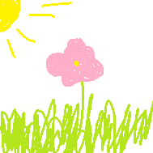

Tere tulemast!
See on veebirakenduse tunnis käsitsi kirjutatud leht
Palun kasuta navigeerimismenüüd, et leida info!
Kasutusjuhend ja uus jQuery efekt
Kuidas lehe elemente kasutada:
- Vii hiir tervitusteksti peale, et muuta see siniseks
- Vajuta nuppudele paremale / vasakule, et liigutada Päevapilti ja selle pealkirja
- Lohista pilti hiirega, et näha selle reaalajas koordinaate ekraanil
- Uue efekti nägemiseks vajuta allolevale nupule (avab ja peidab teksti sujuva libisemisega)
See on uus jQuery efekt slideToggle()! Seda polnud tunnis varem kasutatud.
Päevapilt
Ise tehtud pilt

Lohista pilti koordinaatide nägemiseks